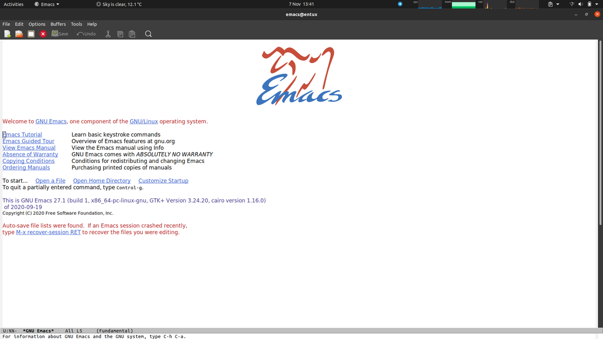
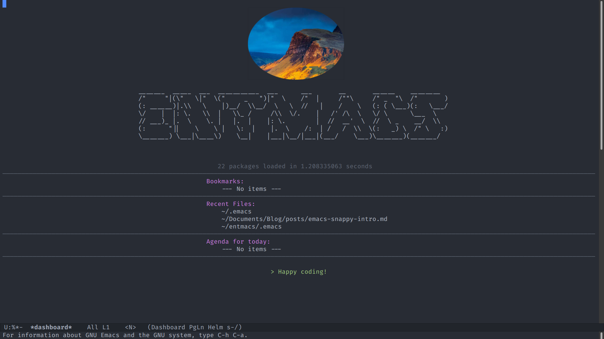
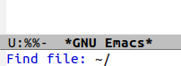
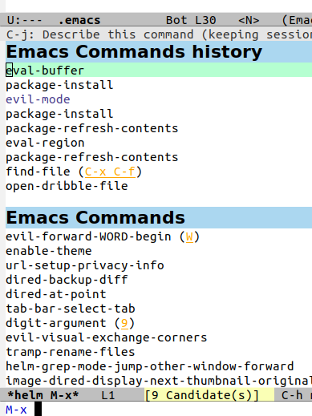
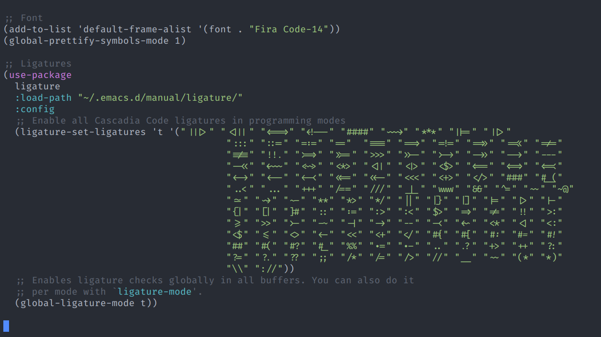
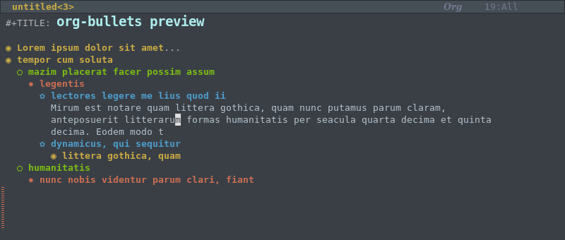

Ent's snappy guide to Emacs
Introduction
I have used many editors over time and one "System" that I really enjoyed was Emacs. However I did not understand how it worked under the hood and it led to some fun times. This post is an attempt to log my experience with learning and understanding the "missing bits" in a single place.
This guide is consolidation of knowledge & experience of 2-3 days of intense focus learning & modifying Emacs.
Purpose
The aim of this guide is to quickly:
- Bootstrap your understanding to a level where you can start thinking in terms Emacs' terminology and use that knowledge to searching the internet for new questions you might have.
- Develop a rudimentary understanding of how to customize Emacs.
- Setup an aesthically pleasing UI with usable setup.
This guide IS NOT about the basics of text editors like:
- What are text editors? What is Emacs or Vim?
- Which editor should I use?
- How to navigate using either editor?
- How to read/write
elisp. I have a basic understanding of lisp/clojure but otherwise I haven't bothered with learning it for this.
Gradual Ramp Up
Most if not all of Emacs' instructions display commands as M-x _. This is meant to be the Meta key which you might otherwise know as Alt key.
Early on in the guide, the instructions are going to be lot more verbose to help the reader get familiar with what to do. But as the guide progresses the information, which has already been repeated a few times, will give way to more terse instructions.
M-x is your friend
I see many guides/books teach the reader how to learn emacs using keystrokes. The idea is that you will develop muscle memory and do things automatically.
Others try to force a custom configuration to make your life easier.
This guide instead relies on M-x to teach any and all necessary commands. Whether you use Emacs mode or Evil mode, M-x is consistent in both modes so your won't have any issues following the instructions.
Another big advantage of M-x is that it allows you to start exploring the available commands on your own and thus helping you learn
What's with the Greek Mythology?
Currently I am listening to Stephen Fry's Mythos which is about Greek Mythology and it's wonderful.
Before I start with the actual guide I want to relay my experience with using Emacs in the past so that you do not make the same mistakes I did.
To quickly give you a snapshot of what each section might entail, I am using references to Greek Mythos :D
Icarus' Emacs
Icarus is a tragic hero who was given a great gift. He did not respect the gift and took it for granted. This led to his downfall.
By the time I decided to learn Emacs I was already a familiar with Vim and it's basic keybindings. I knew that even if I were to be using Emacs, I wanted to continue using Vim bindings, which is what Evil provides. Also I wanted a better theme than the default one.
This was but the tip of the iceberg of my requirements and I was expecting a lot from Emacs.
I tried doing the "right thing" by going through the Emacs tutorials and to slowly learn it but my aim to start using it for my work projects and I did not want to spend a lot of time sifting through everything the system had to offer.
My solution came down to using a preconfigured emacs setup. In this case, I went with Spacemacs. It had everything I needed:
- Beautiful theme
- Evil mode
- Really awesome set of "Layers" (packages/extensions/plugins) enabled by default and ready to use.
- Really nice documentation with well thought out shortcuts etc.
develop branch
I am a Software Engineer by trade and unless I can use Emacs for programming, it cannot be true System/Editor/IDE. Spacemacs has lot of programming related stuff in develop branch as it is still being tested.
The more comfortable I felt using Spacemacs the more I started adding in extra "layers" and soon started adding normal Emacs packages.
At some point my thirst of themes led me to also include Doom Emacs Themes and by this point I had a crazy heavy setup.
The Fall
Note that I still haven't taken time to learn how Emacs and/or packages are put together. I was copy-pasting whatever I could find over the internet to make Emacs do my bidding. You could say I was building a Tower of Babel.
As expected, the fateful day came when my Emacs setup had some package issues and it stopped working. It looked like I was the only one who was suffering from this. I tried to restart with vanilla spacemacs but it became impossible. I was unsure if the issue was with my system/Emacs setup or if something was broken on develop branch of Spacemacs as master is the stable branch.
I could neither use Vanilla Emacs nor could I use Spacemacs and I ended up giving on Emacs altogether.
Ulysses' Emacs & journey home
Ulysses is a resourceful Hero who was beset by many tragedies. Only through his sheer wit & patience was he able to come out unscathed.
Spacemacs is an amazing setup and I intend to go back to it.
However this time around, I plan on taking my time to learn how the ecosystem works and be mindful of what I am doing.
Respect your tools
Thanks to Spacemacs I have a decent idea of what Emacs can do and some of the packages I want. I intend to expand on the list of packages I use but I will do so over time.
Minumum Setup
The following list might seem odd to call minmum but the idea is "To more likely start using it" than give up and shift back to using standard Editors/IDEs like VSCode or IntelliJ for non-work related tasks.
Setup Guide
In this section, I am going to go through the process of converting Vanilla Emacs which looks like this: 
to this, which is my customized setup. 
Emacs
There are different versions of Emacs that you can install but if you want to have all the features of this guide, then I would recommend installing Emacs version 27 because:
- It is the latest version (August 10, 2020)
- It has certain features installed by default
- It allows us to have ligatures (More on this later)
Emacs Version
Emacs27 is not yet available by default on Ubuntu via apt (November 7, 2020).
# Add repository $ sudo add-apt-repository ppa:kelleyk/emacs # Update apt $ sudo apt update
Issue:
trying to overwrite '/usr/include/emacs-module.h', which is also in package emacs-common 1:26.3+1-1ubuntu2
I have Emacs26 installed and even though I had uninstall the previous version before trying to install Emacs27, I still kept running into this issue. I was able to solve this issue by installing emacs27-common before installing Emacs27.
So my installation had one extra step.
# Fixing the installation issue $ sudo apt install emacs27-common # Let's finally install it! $ sudo apt install emacs27
Configuring Emacs (~/.emacs)
The root configuration of Emacs is held by a file referred to as init.el.
Depending on the version of Emacs you are using this can be referring to ~/.emacs.d/init.el or ~/.emacs.
For the purpose of this guide, we will only be referring to and using ~/.emacs.
Package Management
Let's dive into all things you might want to know about Package Management in Emacs.
What is a Package?
Emacs can be used in its basic form but it's power (like Vim) comes from the level of customizability it allows. These customizations can be cosmetic or functional in nature and are provided in the form of "Packages".
Packages are similar to Extensions or Plug Ins in other Editors/IDEs.
Packages on Emacs come under three categories:
- Installed & Enabled Packages: These are ready to use commands when you open a file/window (called Buffer). These include ones that are available when you open Vanilla Emacs for the first time but more can be added later.
-
Installed & Disabled Packages: These are packages which you have installed from
Package Repositoriesbut haven't enabled or aren't in use. - Available Packages: These are packages that are avaiable for installation, these can be via local system or via internet.
Package Repositories or, Where do Packages come from?
Package Repositories are servers that hold a list of package we can download and install.
For now let's stick to three main package repositories:
-
GNU Emacs Lisp Package Archive (ELPA): This is the default repository Emacs will look at for packages. The list is decent but you will quickly find that most useful packages aren't covered by this. The packages in this repository have FSF's seal of approval.
-
Milkypostman's Emacs Lisp Package Archive (MELPA): This is the most popular repository you will see most packages referring to on how to install them. It comes in two flavours.
- MELPA/Stable: Contains packages that have been tagged for releases by the maintainers. This mean you can expect more stability from them.
- MELPA: This is more of development branch and might include not-so-stable packages as well.
Adding MELPA
Let's start by opening Emacs' init file, ~/.emacs.
- Open Emacs
- Emacs is mouse friendly so you can use the mouse to go for the file but let's try a different approach.
- Press
<Meta> + x, type infind-fileand pressEnter. - You should see something like this show up at the bottom of your screen. 
- Type in
~/.emacsandEnter. - Add in following line. If you want to paste this, then command is
<Ctrl> + y
(require 'package) (add-to-list 'package-archives '("melpa" . "https://melpa.org/packages/")) (package-initialize)
- Enter these commands followed by pressing enter
-
Select above text using Mouse
<Meta> + x eval-region<Meta> + xrefresh-package-contents
-
Select above text using Mouse
Installing Packages
Easy Installation
Now your Emacs has access to ELPA & MELPA.
You can start installing packages using following commands
M-x package-install
Manual Installation
Once in a while you will come across packages that are not available on ELPA & MELPA. They might be available on other Package Repositories.
However you can also manually install them. For this purpose you would need use-package package. So let's install that too.
M-x package-install <ret> use-package <ret>
User Experience
Let's start by looking at important packages needed to make life easier for us.
Evil Mode
To quote Emacs Manual
Every buffer possesses a major mode, which determines the editing behavior of Emacs while that buffer is current.
Evil is one such Major Mode which will let us start using Vim commands within Emacs.
M-x package-install<ret>evil<ret>
If you now look at your init file (~/.emacs), it should look similar to this.
(require 'package) (add-to-list 'package-archives '("melpa" . "https://melpa.org/packages/")) (package-initialize) (custom-set-variables ;; custom-set-variables was added by Custom. ;; If you edit it by hand, you could mess it up, so be careful. ;; Your init file should contain only one such instance. ;; If there is more than one, they won't work right. '(package-selected-packages '(evil))) (custom-set-faces ;; custom-set-faces was added by Custom. ;; If you edit it by hand, you could mess it up, so be careful. ;; Your init file should contain only one such instance. ;; If there is more than one, they won't work right. )
We need to edit it to ensure it works without any issues but first...
Enabling Evil Mode
Let us start by enabling Evil Major Mode.
M-x evil-mode
Now we can start moving around the file using Vim keybindings. This is a great start! However we don't want to enable Evil Mode everytime we start emacs but enable it by default.
Let's edit init file to do two things:
- Move the two
(custom-set-* ...)functions to the start of our file. This is to ensure we don't have any issues using packages. - Add
(evil-mode t)at the bottom.
Here's my modified init file.
(custom-set-variables ;; custom-set-variables was added by Custom. ;; If you edit it by hand, you could mess it up, so be careful. ;; Your init file should contain only one such instance. ;; If there is more than one, they won't work right. '(package-selected-packages '(evil))) (custom-set-faces ;; custom-set-faces was added by Custom. ;; If you edit it by hand, you could mess it up, so be careful. ;; Your init file should contain only one such instance. ;; If there is more than one, they won't work right. ) ;;;;;;;;;;;;;;;;;;;;;; ;; START OF CONFIG ;; ;;;;;;;;;;;;;;;;;;;;;; ;; TOP: Initialize package repositories and packages (require 'package) (add-to-list 'package-archives '("melpa" . "https://melpa.org/packages/")) (package-initialize) ;; Evil (evil-mode t)
Commenting Code
If you are used to using gcc to comment out code like I am, you will find it vexing to see that Evil mode doesn't work that way. To have same functionality use evil-commentary.
M-x package-install <ret> evil-commentary
;; Evil (evil-mode 1) (evil-commentary-mode)
Auto Complete
Helm: Interface Auto Complete
Right now if you type M-x package- you don't get any suggestions, the only way to get any at this point is to press <tab>.
There is no organic way to start searching for commands as we type.
This is where Interface Auto Complete comes into picture. We have a few options:
- Helm
- Ivy
- Ido
Helm is supposed to be the most heavy duty of the three but I think it is a good place to start.
M-x package-install <ret> helm <ret>
In order to properly use Helm, we want to do two things:
- Replace existing M-x with the one provided by Helm.
- Enable it to be used on key press.
Add this to the bottom of your init file.
;; Helm (global-set-key (kbd "M-x") 'helm-M-x) (helm-mode 1)
Once you have saved this file, we can evaluate this code to start using Helm.
We already looked at selecting text + M-x eval-region.
There is another neat method we can use, M-x eval-buffer.
Press M-x again and observe!

auto-complete: Text Auto Complete
Now we have auto complete for our M-x and similar menus. But wouldn't it be nice to have something similar when we write in our file as well?
M-x package-install <ret> auto-complete <ret>
;; Bottom of init file. This will enable for all buffers. ;; Code Completion (global-auto-complete-mode t)
Magit: Git Client
Even before Emacs, I mostly used terminal for all things git (including merging conflicts). I found the need to move my hands away form keyboard to reach over for a mouse + clicking menus way too annoying.
Magit took my love for terminal and cranked it all the way to 11.
M-x package-install <ret> magit <ret>
Code Folding
What is a Hook?
To quote Emacs Manual again
A “hook” is a variable where you can store a function or functions to be called on a particular occasion by an existing program.Why do I care?
The only time Code Folding would make sense is if we are dealing with Source Code files.
Easiest way to detect such files is to keep an eye for when Emacs enables prog-mode. This means we can ensure code folding is available ONLY for source code files.
There are a few good packages available for Code Folding but for now I will be defaulting to in-built hs-minor-mode.
This means we do not need to install any new package for once!
;; Bottom of init file ;; Code folding (add-hook 'prog-mode-hook (lambda () (hs-minor-mode t)))
Evil Keybindings
Given that we are using Evil Mode. Following are the keybindings for code folding
-
zR=> Show All -
zM=> Hide All -
zo=> Open Block -
zc=> Close Block
User Interface
Now onto the fun part! So far we have been looking at how to make Emacs functional but now we can concentrate on the aesthetics!
Beautiful Theme
There are three main theme packages I can recommned.
spacemacs-themedoom-themesatom-one-dark
A fourth one, which I haven't yet tried out is, Nord Theme which also looks really nice.
These are packages hence can be installed as usual
M-x package-install <ret> atom-one-dark <ret>
;; Bottom of init file ;; Theme (load-theme 'atom-one-dark t)
Beautiful Fonts
We can get beautiful fonts by enabling three things:
-
Change Font & Size. For this guide I will be using
Fira Code-14,Size 14but you can also use other fonts. - Enable Prettify Symbols. This is built into Emacs so we only need to enable it.
- Install & enable Ligatures. Ligatures are the true joy of life.
;; Bottom of init file ;; Font (add-to-list 'default-frame-alist '(font . "Fira Code-14")) (global-prettify-symbols-mode 1)
Manually installing ligature.el
NOTE: The font you are using should allow for ligatures. Otherwise you might spend a lot of time trying to figure out why your font doesn't look as pretty.
Near the start we briefly touched on use-package which is useful for manual installation of packages.
ligature.el is not available on ELPA/MELPA so we will install it using magit! It is available at https://github.com/mickeynp/ligature.el
We want to:
- Tell Magit to clone repository
- Paste in the URL, assuming it is copied to clipboard
- Point it to directory to install at
M-x magit-clone <ret> u <Shift-Insert>
Few points of note:
-
<Shift-Insert>will paste from clipboard into the bottom area which is calledMini Buffer(?) - It is upto you where you want to clone the package, I put it into
~/.emacs.d/manual/ligature/as I did not want to pollute the rest of the system.
Using use-package
Finally we need to enable ligatures to be used in prog-mode. If you want to enable everywhere, then replace 'prog-mode with 't.
;; Ligatures (use-package ligature :load-path "~/.emacs.d/manual/ligature/" :config ;; Enable all Cascadia Code ligatures in programming modes (ligature-set-ligatures 'prog-mode '("|||>" "<|||" "<==>" "<!--" "####" "~~>" "***" "||=" "||>" ":::" "::=" "=:=" "==" "===" "==>" "=!=" "=>>" "=<<" "=/=" "!==" "!!." ">=>" ">>=" ">>>" ">>-" ">->" "->>" "-->" "---" "-<<" "<~~" "<~>" "<*>" "<||" "<|>" "<$>" "<==" "<=>" "<=<" "<->" "<--" "<-<" "<<=" "<<-" "<<<" "<+>" "</>" "###" "#_(" "..<" "..." "+++" "/==" "///" "_|_" "www" "&&" "^=" "~~" "~@" "~=" "~>" "~-" "**" "*>" "*/" "||" "|}" "|]" "|=" "|>" "|-" "{|" "[|" "]#" "::" ":=" ":>" ":<" "$>" "=>" "!=" "!!" ">:" ">=" ">>" ">-" "-~" "-|" "->" "--" "-<" "<~" "<*" "<|" "<:" "<$" "<=" "<>" "<-" "<<" "<+" "</" "#{" "#[" "#:" "#=" "#!" "##" "#(" "#?" "#_" "%%" ".=" ".-" ".." ".?" "+>" "++" "?:" "?=" "?." "??" ";;" "/*" "/=" "/>" "//" "__" "~~" "(*" "*)" "\\" "://")) ;; Enables ligature checks globally in all buffers. You can also do it ;; per mode with `ligature-mode'. (global-ligature-mode t))
With all of them enabled, this is what it looks like!

Beautiful Org Mode
One of the main reasons I want to use Emacs again is how useful the Org Mode is.
Compared how Org mode normally looks, Spacemacs included an extra package to make it looks better.
I will be installing it for my current setup as well.
M-x package-install <ret> org-bullets
;; Bottom of init file (add-hook 'org-mode-hook (lambda () (org-bullets-mode 1)))
This is what it would look like: 
Soft Wrap (Lines & Words)
Definitions
Soft Wrap is visually splitting text based on conditions. It doesn't affect actual file content.
Hard Wrap will actually split the text into multiple lines and it will affect file contents.
How To: Soft Wrap
Depending on the buffer size, words get wrapped midway and continue on next line. Instead it would be ideal to have the whole word wrapped onto next line.
When working with free flowing text, a line can run till the end of the buffer before being wrapped onto next line. Perhaps you prefer it be wrapped after certain column length.
This can be achieved by installing package visual-fill-column. Installation steps are left as an exercise for the reader ;)
;; Can you guess where to put this? ;; Soft Wrap: Words & Lines (global-visual-fill-column-mode t) (setq-default fill-column 120) (setq-default word-wrap t)
Line Numbers
If you are a programmer, you know how important line numbers are.
If you search the internet, you will find 2 major options:
linum-modeline-number-mode
However I recommend going with in-built method
global-display-line-numbers-mode
as it doesn't glitch with Soft Wrap.
;; Enable Line Numbers (global-display-line-numbers-mode t) ;; set type of line display. Options :: 'absolute 'relative 'none 'visual (menu-bar-display-line-numbers-mode 'absolute)
Startup Screen
At this point of time, this is what the Emacs looks like. It is not a bad but it doesn't have the Wow! factor.
Let's start with simple stuff first. We can
- Remove Toolbar
- Remove Menubar
- Start in Full screen
;; Remove Toolbars (tool-bar-mode -1) (menu-bar-mode -1) ;; Fullscreen (toggle-frame-fullscreen)
Dashboard
We can bring in a lot more finesse by using emacs-dashboard which is available on MELPA.
Dashboard with Centered content
;; Dashboard ;; Main Configuration ;; - Content is not centered by default. To center, set (setq dashboard-center-content t) ;; - To disable shortcut "jump" indicators for each section, set (setq dashboard-show-shortcuts nil) ;; - Init (dashboard-setup-startup-hook)
Customizing Dashboard
Instead of showing default logo & title, we can load our own stuff.
If you want to do something similar, start by adding these functions.
;; Dashboard ;; Helper Methods (defun slurp-splash-screen () "Return FILE's content as a string." (with-temp-buffer (insert-file-contents "~/.emacs.d/manual/splash.txt") (buffer-string))) (defcustom get-logo (expand-file-name "manual/logo4.png" user-emacs-directory) "Get logo" :group 'entmacs :type 'string)
With all this in place, we get!
Unwanted recent files
You might notice a lot of unwanted files/folders also show up on your dashboard. The easiest way This is handled by recentf. So we need to let recentf know which folders to exclude.
;; - Exclude unwanted folders (require 'recentf) (add-to-list 'recentf-exclude (expand-file-name "~/.emacs.d")) (add-to-list 'recentf-exclude (expand-file-name "/usr"))
Indent Guides
Indent Guides are useful to see how many spaces a code block has been indented.
For this I installed package highlight-indent-guides
;; Code Indentation Guides ;; - Indent Fill Type. Options :: 'fill 'column 'character 'bitmap (setq highlight-indent-guides-method 'column) ;; - Hook to enable for prog-mode (add-hook 'prog-mode-hook 'highlight-indent-guides-mode)
Customization
Apart from Evil mode and relying on M-x for executing commands. You can also create new keyboard shortcuts. Let's look at two ways of creating keyboard shortcuts
Binding Keys
One of the most frequent tasks I do is open my init file which I was doing by typing in :e ~/.emacs.
However I can assign a set of key sequences to do the same.
;; My Key Bindings (global-set-key (kbd "C-x e") (lambda () (interactive) (find-file "~/.emacs")))
Keyboard Macros
To be honest it took me a lot longer to figure out the right function to create the key binding. In the mean time, I figured out a more "hacky" way to do it via Keyboard Macros (kbd-macros).
Basically you tell Emacs to record your keystrokes as a sequence. Then you can reuse the macro by giving it a name. A typical process might look something as follows:
-
<f3>: Start recording keystrokes -
<f4>: Stop recording keystrokes -
M-x name-last-kbd-macro: Store keyboard macro with a name -
M-x insert-kdb-macro: Insert into buffer keyboard macro that was stored
I was able to then reuse this macro and bind it to the key sequence.
;; Keyboard Macros (fset 'ed-emacsprof (kmacro-lambda-form [?: ?e ? ?~ ?/ ?. ?e ?m ?a ?c ?s return] 0 "%d")) (global-set-key (kbd "C-c e") 'ed-emacsprof)
Noteworthy Mentions
Some packages & commands you might want to look into
restart-emacs-
treemacsorneotree - Emacs' built-in help you can pull up by
C-h ? - Switching between buffers with
C-x b - Switching between split panes
C-x o markdown-modeelisp-formatdisplay-time-modedisplay-battery-mode
Terra Incognita
I still have a lot more to explore. These are some of the packages:
Hydralsp/lsp-uiyas snippetsprojectileorg-mode
Conclusion
Hope you found this guide useful. I am sure there are many things I did did not get right and I will come back to correct them in this guide.